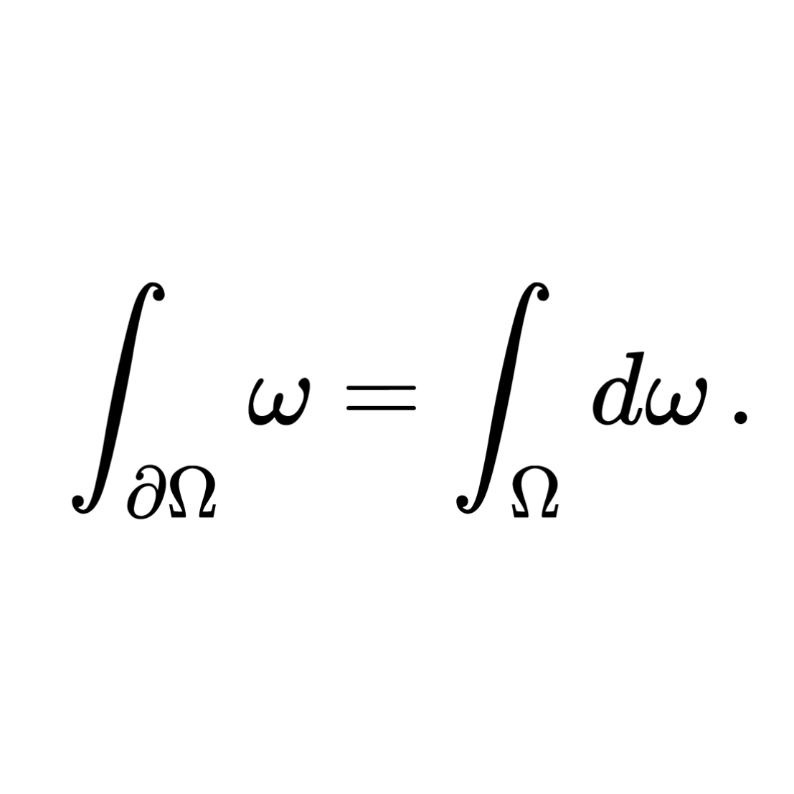

Nathan Gurrin-Smith

| Born | Nathan Peter Michael Gurrin-Smith 1999 Toronto, Ontario |
| Died | Not yet! |
| Occupation | Retail Worker • Student |
| Alma Mater | University College, University of Toronto |
| Links | Github Instagram (climbing) Goodreads Minesweeper |
"Chef, mosquito lover, cooked cherry tomato enthusiast.
Those are words that don't describe who I am."
Nathan Gurrin-Smith BSc (neɪθən gɜrɪn-smɪθ , born 1999) is an ordinary Canadian person.
Early Life
Nathan Peter Michael Gurrin-Smith was born in 1999 in Toronto, Ontario, to parents.
Education
Gurrin-Smith went to school.
Elementary School (2003-2013)
Neil McNeil High School (2013-2017)
University of Toronto (2017-2022)
Kinesiology (2017-2018)
Mathematics and Physics (2018-2022)
Career
Gurrin-Smith went to work.
Personal Life
Hobbies
Gurrin-Smith enjoys a variety of different hobbies.
Athletics
Gurrin-Smith competed in a variety of different endurance-based sports.Achievements
| Year | Competition | Venue | Position | Event | Notes |
|---|
Personal Bests
| Event | Mark | Date | Place |
|---|---|---|---|
| Running | |||
| Swimming | |||